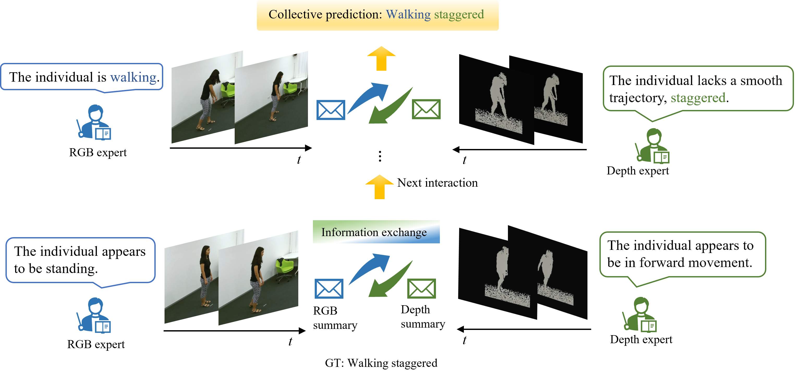

Yujun Ma, PhD
Postdoctoral Research Fellow · Department of Pathology and Laboratory Medicine · University of California, Irvine
EDUCATION
- Ph.D. Computer Science, Massey University
- M.S. (add if you want)
- B.S. (add if you want)
About
I work on multimodal and temporal deep learning spanning clinical time-series modeling (EHR), medical imaging and computational pathology, and video understanding.
My recent work includes robust representation learning over time, generative modeling for computational staining/destaining, and video-based action recognition and captioning.
Last updated: 2026
Project 3 — Video Understanding (Action Recognition & Video Captioning)
I develop models for video-based understanding, including action recognition and video captioning. My work explores spatiotemporal representation learning and multimodal alignment, with model designs that improve recognition and description of complex actions in videos.
Action recognition
Video captioning
Spatiotemporal learning
Multimodal

MFST model

E-CMAT

Video captioning
Contact
Email: yujunm5@hs.uci.edu